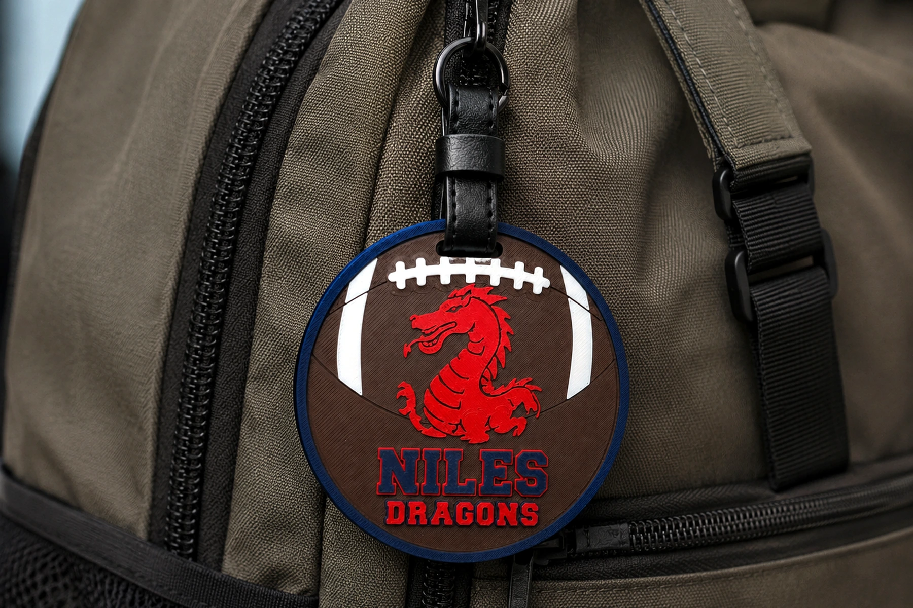
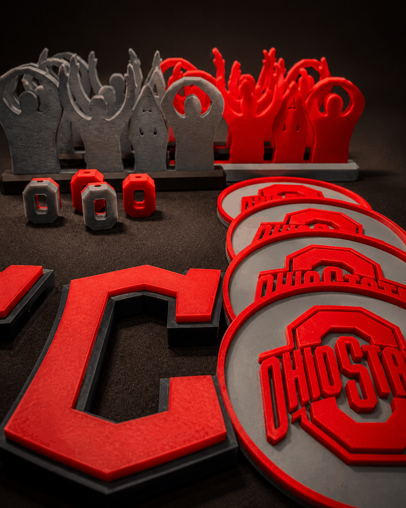

Personalization
Made for the student.
Names and design choices turn a fundraiser item into something that feels personal.
Schools. Teams. Local groups.
From school-spirit projects to fundraiser collections, OliPoly helps groups create something people are excited to carry, share, and support.

A real local project
The Niles Primary HSA project brought together multiple designs, school colors, personalization, event inventory, and fundraiser ordering in one coordinated program.

School spirit
Families could choose from sport, cheer, and school-spirit designs while the organization kept the ordering and event experience simple.
Names and design choices turn a fundraiser item into something that feels personal.

Pre-made inventory, custom orders, and clear pickup plans help the project work beyond the website.
Ways to work together
Thoughtful products, clear pricing, and a program designed around how your organization collects orders.
Personalized tags, gifts, event pieces, and designs that help people show where they belong.
Small batches, ready-to-sell inventory, and custom work for local programs and gatherings.
Your group, your idea
Share the organization, the event, and what you hope the project can accomplish. OliPoly will help shape the next step.
Start a Community Project